Certificatul expiră peste 14 luni: cine conduce spitalul?
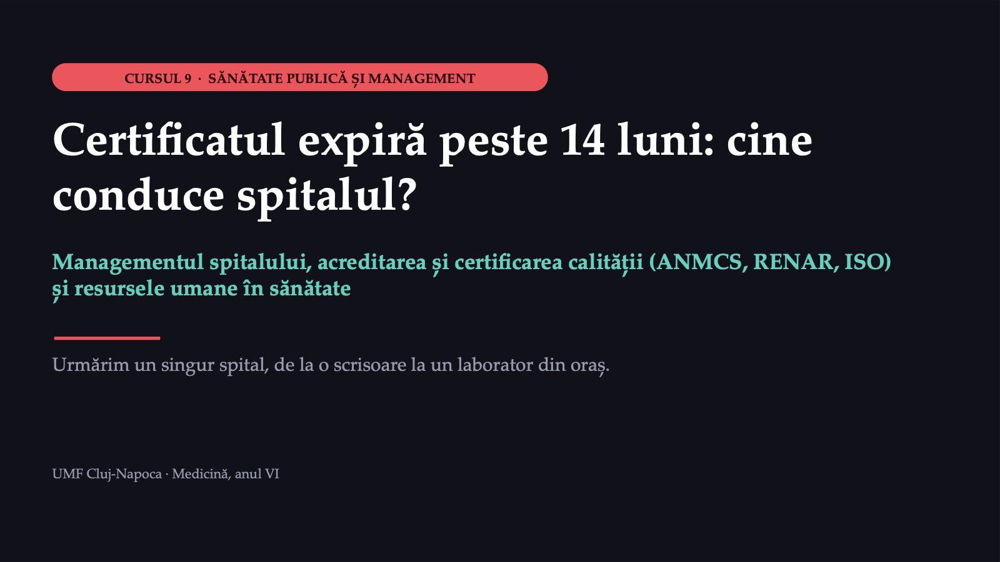
1 / 55Spitalul Județean A primește o scrisoare
![ACTUL ÎNTÂI · SITUAȚIA Spitalul Județean A primește o scrisoare SPITALUL 700 de paturi, 21 de secții și compartimente, laborator, radiologie și unitate de primiri urgențe SCRISOAREA certificatul de acreditare expiră peste 14 luni; fără reacreditare, contractul cu casa de asigurări este în pericol JOI managerul convoacă comitetul director; neurologia nu a putut documenta acoperirea cu medici Cine ar trebui să conducă pregătirea pentru reacreditare? Caz construit pentru curs; detaliile sunt plauzibile, nu reale. Caz construit; valori ipotetice.](diapozitive/C09/002.jpg) 2 / 55
2 / 55Cine ar trebui să conducă pregătirea pentru reacreditare?
![MENTIMETER · VOTUL 1 PRIMA DECIZIE Cine ar trebui să conducă pregătirea pentru reacreditare? A Managerul, singur, pentru că el semnează contractul de management B Directorul medical, prin consiliul medical, pentru că evaluarea privește îngrijirea pacienților C Comitetul director, cu structura de management al calității ca nucleu de lucru și cu șefii de secții responsabili pentru secțiile lor D O firmă de consultanță, plătită să pregătească dosarul Vot individual, fără discuție. Răspundeți pe telefon, la codul afișat. [codul QR Mentimeter]](diapozitive/C09/003.jpg) 3 / 55
3 / 55Convingeți-l pe colegul care a votat altfel
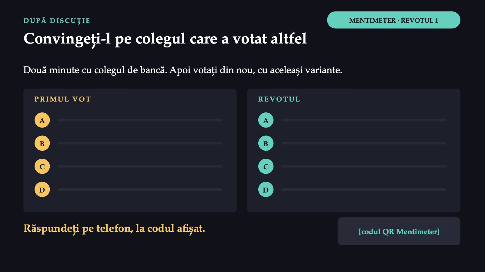
4 / 55Două linii de autoritate într-un singur spital
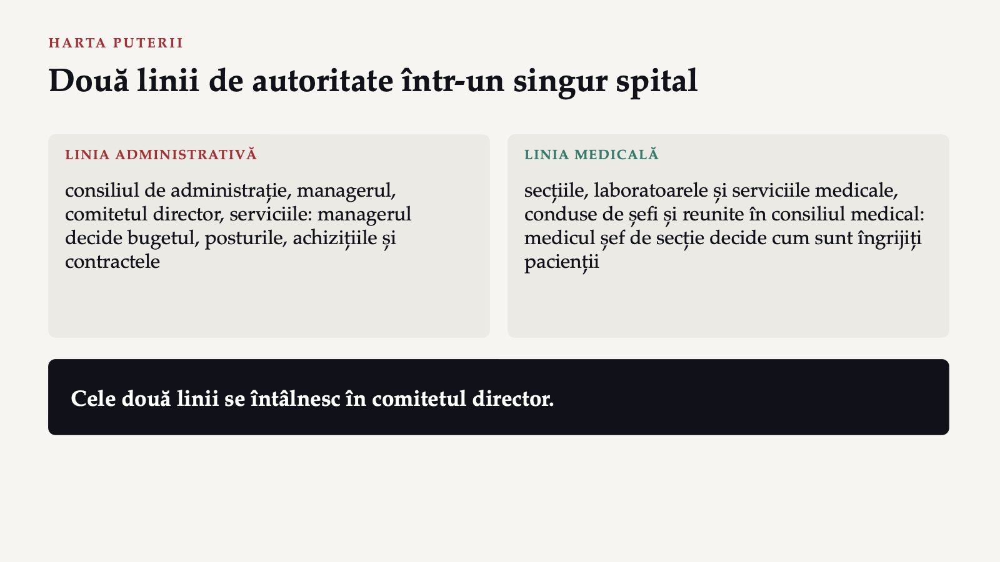
5 / 55Organigrama simplificată a Spitalului Județean A
![ORGANIGRAMA · CAZ CONSTRUIT Organigrama simplificată a Spitalului Județean A Consiliul de administrație 1 Managerul 4 COMITETUL DIRECTOR manager · director medical · director de îngrijiri · director financiar-contabil LINIA ADMINISTRATIVĂ LINIA MEDICALĂ RUNOS Financiar-contabil Achiziții Tehnic Juridic Structura de management al calității 5 Consiliul medical prezidat de directorul medical 3 Secții 2 Laboratoare Servicii medicale șefi prin concurs sau examen Numerele 1–5 marchează întrebările de pe diapozitivul următor.](diapozitive/C09/006.jpg) 6 / 55
6 / 55Cinci întrebări, un răspuns scurt la fiecare
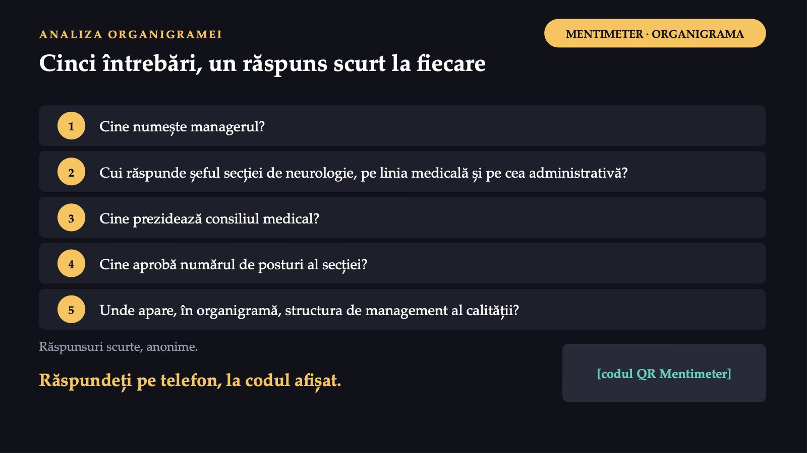
7 / 55Aceeași structură, într-un spital real
![UN SPITAL REAL Aceeași structură, într-un spital real Managerul COMITETUL DIRECTOR · CINCI MEMBRI 1 · Manager 2 · Director medical 3 · Director financiar-contabil 4 · Director de îngrijiri 5 · Medic epidemiolog, coordonator al compartimentului de prevenire a infecțiilor Serviciul de management al calității: subordonat direct managerului Consiliul medical, sub președinția directorului medical șefii de secții, laboratoare și servicii medicale, farmacistul-șef, asistentul-șef 25 de secții 6 compartimente distincte 19 compartimente în cadrul secțiilor Legea: trei membri, patru peste 400 de paturi. După ROF 2024, document marcat „PROIECT”; schemă desenată din text. Al cincilea membru: trimitere la Ordinul nr. 1101/2016, neverificat de noi. Sursa: ROF al Spitalului Județean de Urgență Bacău, 2024 (PROIECT).](diapozitive/C09/008.jpg) 8 / 55
8 / 55Cine poate fi manager și cât durează contractul
![MANAGERUL Cine poate fi manager și cât durează contractul CONDIȚII, CUMULATIV licență în medicină, medicină dentară, științe juridice sau economice; master în specialitatea funcției (exceptați absolvenții de medicină și de medicină dentară); cel puțin cinci ani vechime CONTRACTUL DE MANAGEMENT cel mult patru ani; evaluare anuală pe indicatori; revocare dacă indicatorii nu sunt realizați cel puțin un an, din motive imputabile managerului Un economist cu master poate conduce un spital județean; un medic poate candida și fără master.](diapozitive/C09/009.jpg) 9 / 55
9 / 55Trei întrebări pe aceeași masă
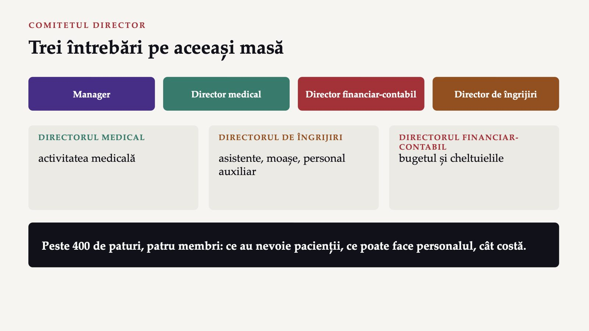
10 / 55Linia medicală: șefii de secții
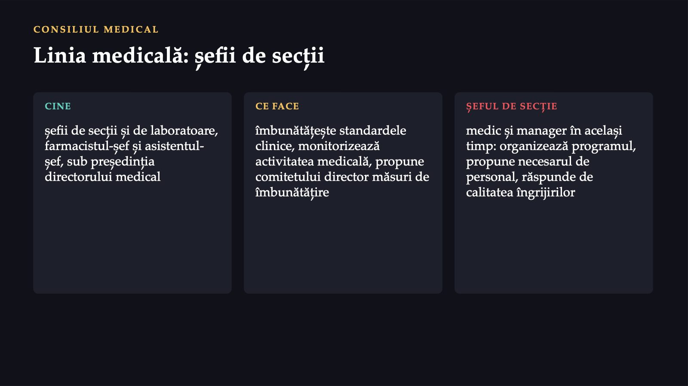
11 / 55Ultima căsuță: calitatea, din interior
![STRUCTURA DE MANAGEMENT AL CALITĂȚII Ultima căsuță: calitatea, din interior CE ESTE spitalele trebuie să aibă o astfel de structură, care asigură și monitorizează din interior calitatea serviciilor UNDE STĂ locul în organigramă îl stabilește fiecare spital; în organigrama cazului, ea este pusă sub manager Alegere a cazului construit, nu o regulă citată în note. Cum funcționează în practică: cursul următor. Sursa: analiza sistemului de sănătate din România (OMS Europa și Observatorul European), 2026.](diapozitive/C09/012.jpg) 12 / 55
12 / 55Cinci întrebări, cinci răspunsuri
![ANALIZA ORGANIGRAMEI · CE SPUN NOTELE Cinci întrebări, cinci răspunsuri 1 Managerul: după concursul organizat de consiliul de administrație (art. 177). 2 Șeful de secție: pe linia medicală, în consiliul medical; bugetul și posturile le decide managerul. 3 Consiliul medical: prezidat de directorul medical (art. 186). 4 Posturile: le aprobă managerul, după normativul în vigoare (art. 180). 5 Structura de calitate: sub manager, în organigrama cazului; locul îl alege spitalul. Structura este cerută; locul ei îl alege spitalul.](diapozitive/C09/013.jpg) 13 / 55
13 / 55C: comitetul director, cu structura de calitate ca nucleu
![PRIMA DECIZIE · CE SPUN NOTELE C: comitetul director, cu structura de calitate ca nucleu A Contrazice organizarea: comitetul director există pentru ca deciziile mari să fie luate împreună. B Parte de adevăr, dar directorul medical nu controlează bugetul, posturile și achizițiile. C Cea mai apropiată de organizarea din lege; nucleul de lucru este o judecată de organizare, nu o prevedere. D Poate ajuta la documente, dar nu înlocuiește spitalul: evaluarea verifică ce se întâmplă în secții. Un dosar pregătit din afară se vede la prima discuție cu o asistentă.](diapozitive/C09/014.jpg) 14 / 55
14 / 55Ce este acreditarea unității sanitare
 15 / 55
15 / 5525
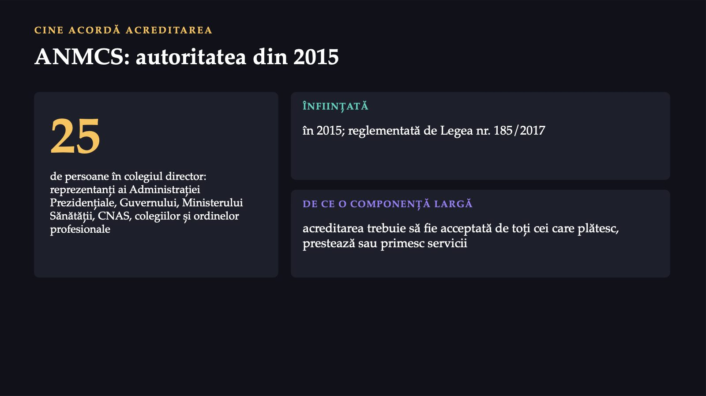
16 / 55De la înscriere la certificat
![PAȘII ACREDITĂRII De la înscriere la certificat PASUL CE FACE SPITALUL CE FACE ANMCS Înscrierea Depune documentația, după ce a început implementarea sistemului de calitate Aprobă metodologia și termenele Taxa Plătește taxa pentru un ciclu de acreditare Stabilește calculul, prin ordin comun cu Ministerul Sănătății Evaluarea Primește evaluatorii, pune la dispoziție documentele și personalul Evaluează, prin evaluatori externi Decizia Primește categoria de acreditare Publică lista în Monitorul Oficial Valabilitatea Pregătește reacreditarea înainte de expirare Emite certificatul, valabil cinci ani Sursa: Legea calității în sănătate (Legea nr. 185/2017).](diapozitive/C09/017.jpg) 17 / 55
17 / 55Fără acreditare, fără contract cu casa de asigurări
![DE CE CONTEAZĂ Fără acreditare, fără contract cu casa de asigurări MIZA spitalele trebuie acreditate la fiecare cinci ani pentru contract cu asigurările de sănătate; fără contract, un spital public pierde cea mai mare parte a veniturilor EXCEPȚII obligatorie și pentru unitățile fără contract cu casa, cu excepții: cabinetele medicale și laboratoarele de analize medicale (art. 7 alin. (5)) LIMITA rapoartele nu sunt publice: pacientul află statutul spitalului, nu ce au găsit evaluatorii Sursa: analiza sistemului de sănătate din România (OMS Europa și Observatorul European), 2026.](diapozitive/C09/018.jpg) 18 / 55
18 / 558
![CE ȘTIM DESPRE EFECTE Acreditarea merită? Dovezile sunt limitate 8 revizii sistematice despre acreditarea spitalelor (sinteza din 2019), cu studii mai ales din afara Europei CONCLUZIA dovezile despre efectul asupra calității îngrijirilor sunt limitate: există foarte puține studii controlate CE PARE SĂ SE SCHIMBE felul în care spitalele se pregătesc pentru evaluare; efectul asupra îngrijirii și rezultatelor clinice nu este stabilit Acreditarea obligă spitalul să-și scrie procedurile, dar nu garantează singură îngrijiri mai bune. Sursa: Observatorul European al Sistemelor și Politicilor de Sănătate, sinteza din 2019.](diapozitive/C09/019.jpg) 19 / 55
19 / 55Neurologia, la autoevaluare
![ACTUL AL DOILEA · COMPLICAȚIA Neurologia, la autoevaluare NEUROLOGIA 35 de paturi; doi medici specialiști și șeful de secție GRAFICUL în multe zile, un singur medic a acoperit secția și consulturile din urgență TERAPIE INTENSIVĂ două asistente au demisionat pentru a lucra în străinătate; trei colege sunt în concediu medical prelungit ȘEFUL DE SECȚIE „cel puțin încă doi medici” DIRECTORUL FINANCIAR-CONTABIL statul de funcții respectă normativul de personal Caz construit pentru curs; detaliile sunt plauzibile, nu reale.](diapozitive/C09/020.jpg) 20 / 55
20 / 55Cum află comitetul director câți medici îi lipsesc neurologiei?
![MENTIMETER · VOTUL 2 A DOUA DECIZIE Cum află comitetul director câți medici îi lipsesc neurologiei? A Aplică normativul de personal în vigoare, pe care statul de funcții îl respectă deja B Măsoară încărcarea reală a medicilor (internări, zile de spitalizare, consulturi) și o compară cu timpul de lucru disponibil C Compară densitatea medicilor din județ cu media europeană D Acceptă cererea șefului de secție, care cunoaște secția cel mai bine Vot individual, fără discuție. Răspundeți pe telefon, la codul afișat. [codul QR Mentimeter]](diapozitive/C09/021.jpg) 21 / 55
21 / 55Doi colegi, două minute, același enunț
22 / 55De ce nu ajunge „cât cere normativul”
![NORMATIVUL ȘI MUNCA REALĂ De ce nu ajunge „cât cere normativul” NORMATIVUL legea leagă numărul de posturi de normativul de personal în vigoare; statul de funcții al neurologiei îl respectă LIMITA METODELOR raportarea lucrătorilor la populație și standardele pe tip de unitate ignoră variația cererii și munca efectivă METODA WISN indicatori de încărcare pentru necesarul de personal, pornind de la munca efectivă; manualul OMS, ediția a doua, 2023 Neurologia respectă normativul, iar graficul arată totuși zile cu un singur medic. Sursa: OMS, manualul metodei WISN, ediția a doua, 2023.](diapozitive/C09/023.jpg) 23 / 55
23 / 55De la timpul disponibil la încărcarea standard
![WISN · PAȘII 1–5 De la timpul disponibil la încărcarea standard TIMPUL DISPONIBIL zilele lucrătoare posibile într-un an, fără sărbători, concediu de odihnă, concediu medical și formare STANDARDUL DE ACTIVITATE timpul unui lucrător bine pregătit pentru o activitate, la calitate acceptabilă ÎNCĂRCAREA STANDARD câte unități face un lucrător într-un an: timpul disponibil împărțit la standard Mai întâi: categoria de personal, tipul de unitate, componentele activității. Sursa: OMS, manualul metodei WISN, ediția a doua, 2023.](diapozitive/C09/024.jpg) 24 / 55
24 / 55Trei factori, o formulă
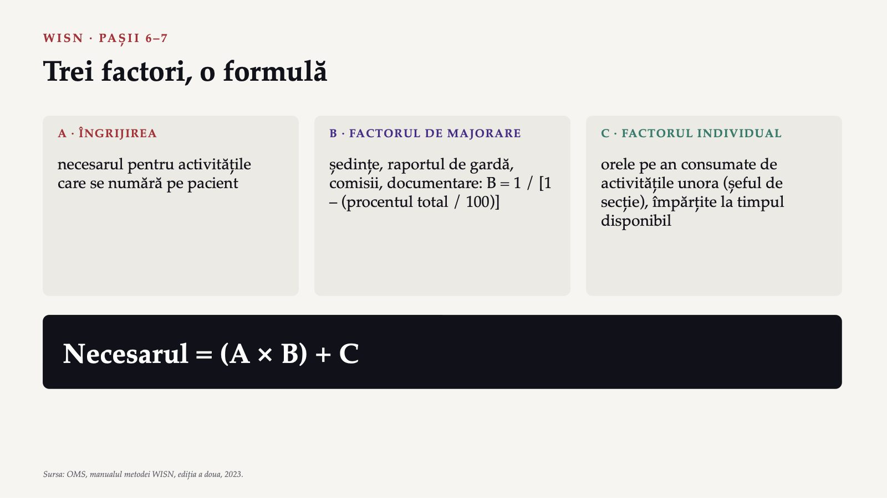
25 / 55Diferența și raportul arată lucruri diferite
 26 / 55
26 / 55260
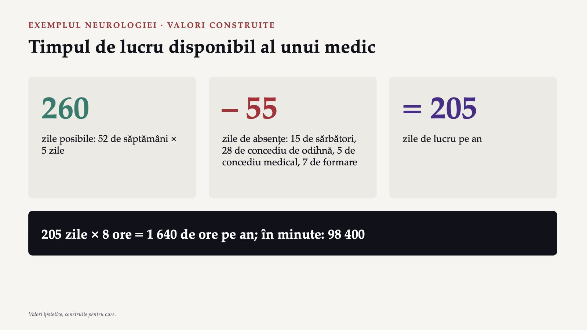
27 / 55Trei componente ale îngrijirii
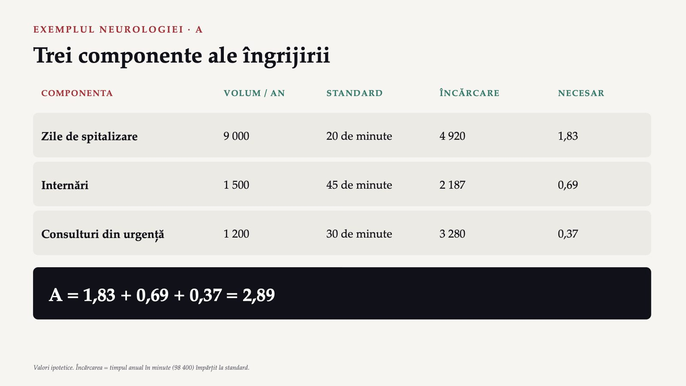
28 / 55Factorii și necesarul total
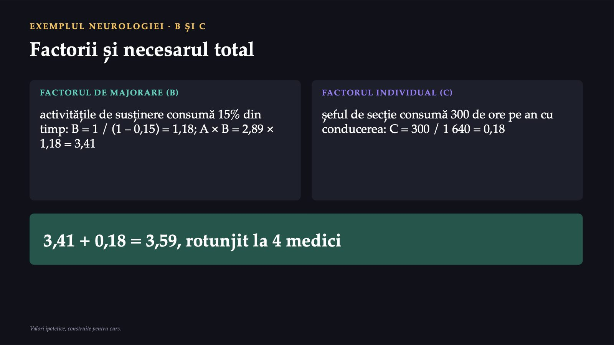
29 / 553
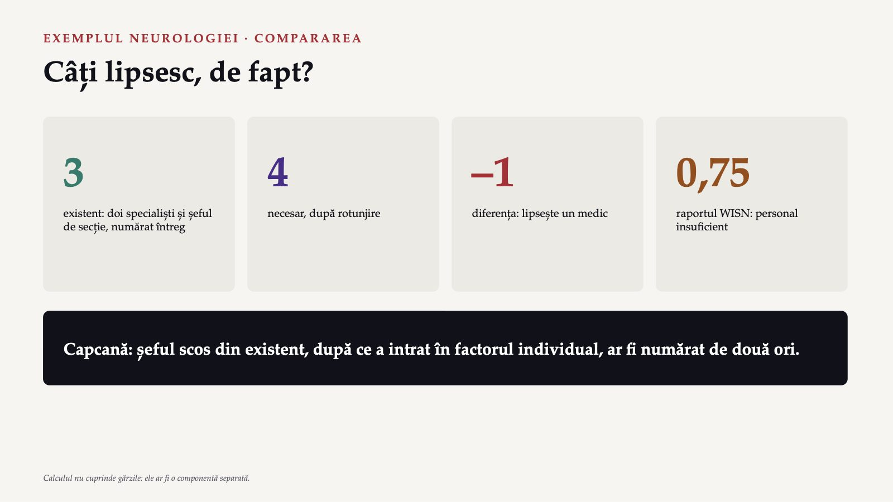
30 / 55B: măsurați încărcarea reală
![A DOUA DECIZIE · CE SPUN NOTELE B: măsurați încărcarea reală A Obligatoriu, dar nu suficient: o normă pe tip de unitate ignoră munca efectivă. B Metoda WISN: necesarul din volumul real al activității, comparat cu personalul existent prin diferență și raport. C Amestecă nivelurile: densitatea la 100 000 de locuitori descrie un județ, nu o secție. D Cunoaște secția, dar nu are o măsură comună cu celelalte; cererea devine argument după calcul. Cererea șefului de secție poate fi corectă, dar devine argument abia după ce este calculată.](diapozitive/C09/031.jpg) 31 / 55
31 / 55376 188
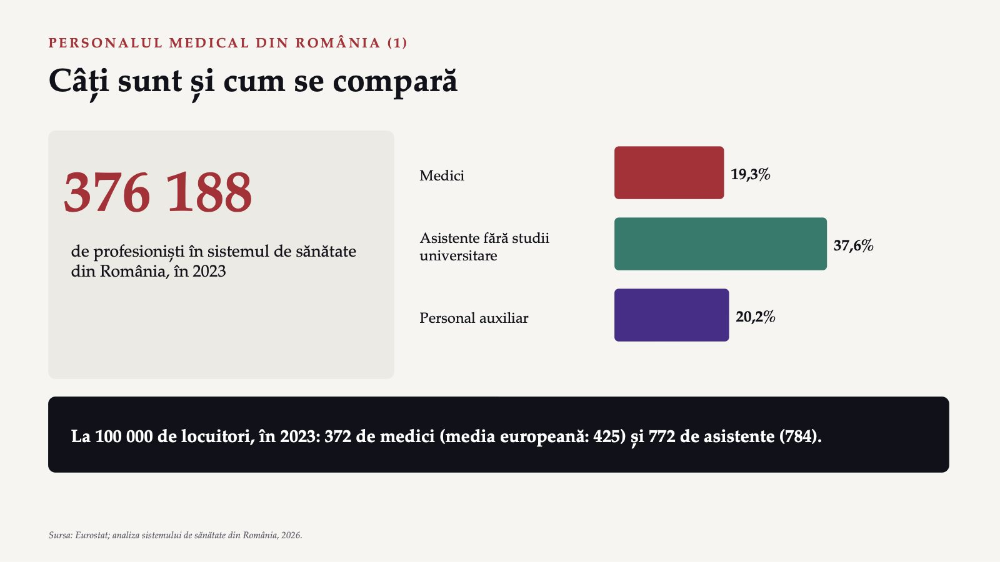
32 / 55Distribuția și vârsta
 33 / 55
33 / 55Medici și asistente plecați din țară
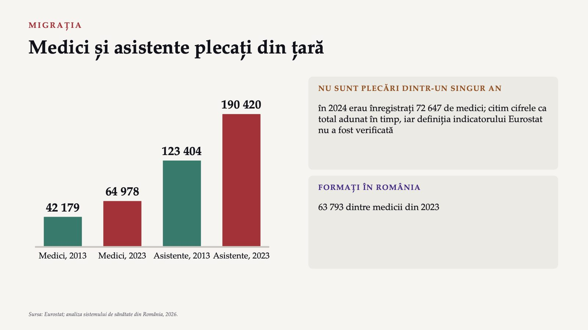
34 / 5540,3%
![MIGRAȚIA · CAUZE ȘI RĂSPUNS Salariile și intenția de a pleca 40,3% dintre medicii sub 35 de ani se gândeau să plece din țară (sondaj, 2023); 17,2% aveau o intenție fermă SALARIILE motiv declarat; în 2017–2018 salariul net al rezidentului a crescut cu 162% (de la aproximativ 344 la 902 de euro), al medicului primar cu 131% (de la 913 la 2112 euro) EFECTUL nu există dovezi publice despre efectul creșterii asupra migrației Sursa: analiza sistemului de sănătate din România (OMS Europa și Observatorul European), 2026.](diapozitive/C09/035.jpg) 35 / 55
35 / 55Mai multe asistente, mai puține decese?
![ASISTENTE ȘI SIGURANȚA PACIENȚILOR Mai multe asistente, mai puține decese? STUDIUL nouă țări europene, 2014 (Aiken și colaboratorii), citat în sinteza Observatorului European din 2019 REZULTATUL mai mulți pacienți pe asistentă: mortalitate mai mare în 30 de zile; la 10% în plus de asistente cu licență, probabilitate de deces mai mică cu 7% Studiul are peste un deceniu: îl folosim pentru mecanism, nu pentru a estima efectul în spitalele din România. Sursa: Observatorul European al Sistemelor și Politicilor de Sănătate, sinteza din 2019.](diapozitive/C09/036.jpg) 36 / 55
36 / 55Un fenomen legat de locul de muncă
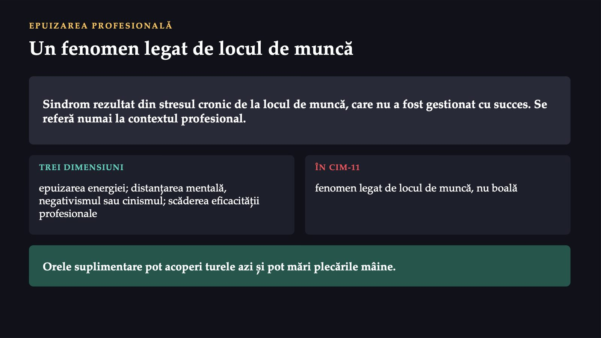
37 / 55Comitetul director lărgit, la două luni după autoevaluare
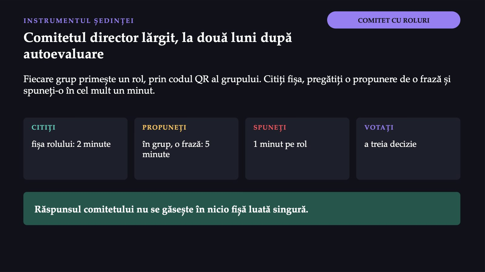
38 / 55Șapte roluri, șapte coduri
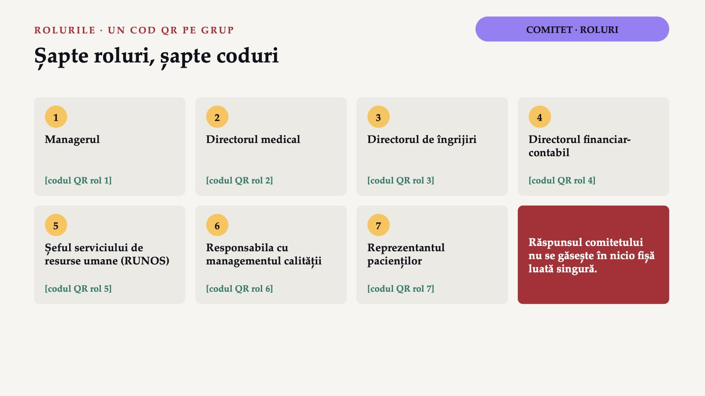
39 / 55Ce prezintă spitalul evaluatorilor despre personalul neurologiei?
![MENTIMETER · VOTUL 3 · DIN ROL A TREIA DECIZIE Ce prezintă spitalul evaluatorilor despre personalul neurologiei? A Deficitul calculat prin WISN, spus deschis, cu un plan până la expirarea certificatului B O organigramă în care apar, la neurologie, și medici din alte secții, fără ca programul lor să se schimbe C Nimic deocamdată: amânăm înscrierea pentru reacreditare până când ocupăm posturile D Închiderea temporară a secției de neurologie și trimiterea pacienților la alt spital Fiecare grup votează din rolul său. Răspundeți pe telefon, la codul afișat. [codul QR Mentimeter]](diapozitive/C09/040.jpg) 40 / 55
40 / 55Același rol, același enunț, după discuție
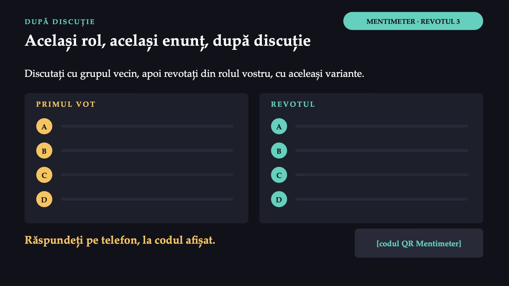
41 / 55A: deficitul spus deschis, cu plan
![A TREIA DECIZIE · CE SPUN NOTELE A: deficitul spus deschis, cu plan A Spitalul o poate susține: deficit măsurat cu o metodă explicită, măsuri pe care le controlează, putere legală asupra posturilor. B Declarație falsă: transformă o problemă de organizare într-una de integritate. C Fără acreditare, spitalul nu mai poate încheia contract cu asigurările: problema devine a întregului spital. D Mută problema la pacienți; închiderea ar cere o analiză a accesului în județ. Mutarea sarcinilor administrative nu creează medici noi, dar le eliberează timp pentru pacienți.](diapozitive/C09/042.jpg) 42 / 55
42 / 55Un laborator nou în orașul spitalului
 43 / 55
43 / 55Ce îi trebuie laboratorului pentru contractul cu casa de asigurări?
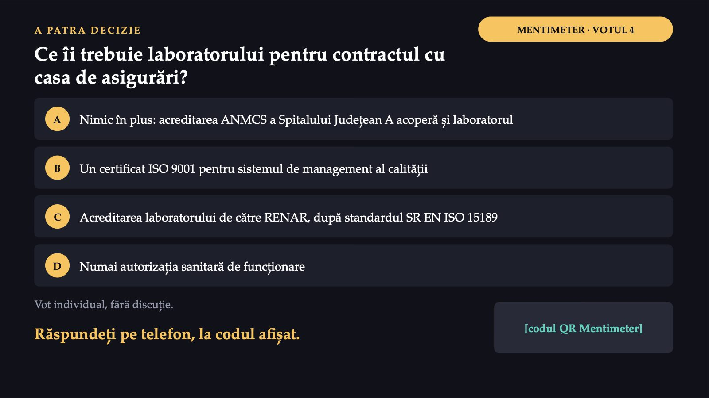
44 / 55Același enunț, după discuție
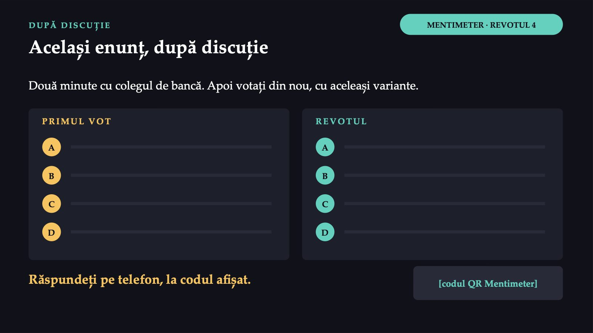
45 / 55Două înțelesuri, două instituții
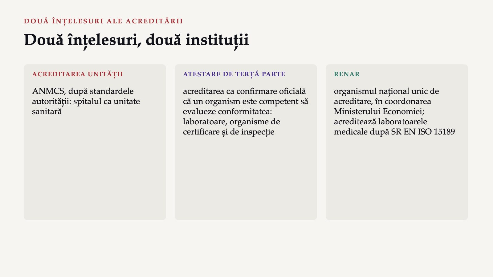
46 / 55Două întrebări diferite
 47 / 55
47 / 55Pentru sănătate există și standarde proprii
![ALTE STANDARDE ȘI MODELE Pentru sănătate există și standarde proprii EN ISO 15224 din 2012, actualizat în 2017: adaptează cerințele ISO 9001 la serviciile de sănătate; accent pe procesele clinice și pe riscurile lor JOINT COMMISSION (JCI) Joint Commission International, model internațional de acreditare și certificare; în Europa, aproximativ 80 de spitale acreditate (sinteza din 2019) CONTRACTUL CU CASA în România contează acreditarea ANMCS Sursa: Observatorul European al Sistemelor și Politicilor de Sănătate, sinteza din 2019.](diapozitive/C09/048.jpg) 48 / 55
48 / 55Comparația, pe scurt
![TREI FORME DE EVALUARE EXTERNĂ Comparația, pe scurt ACREDITAREA UNITĂȚII ACREDITAREA LABORATORULUI CERTIFICAREA SISTEMULUI Cine o face ANMCS RENAR Un organism de certificare, recunoscut de organismul național de acreditare După ce Standardele ANMCS SR EN ISO 15189 ISO 9001 sau EN ISO 15224 Ce confirmă Conformitatea serviciilor cu standardele Competența de a efectua analize Conformitatea sistemului de management În România Spitalele, pentru contractul cu casa Laboratoarele din afara spitalelor, pentru contract Dovadă a unui sistem; nu înlocuiește acreditarea](diapozitive/C09/049.jpg) 49 / 55
49 / 55C: acreditarea laboratorului, de către RENAR
![A PATRA DECIZIE · CE SPUN NOTELE C: acreditarea laboratorului, de către RENAR A Confundă instituțiile: laboratoarele de analize medicale sunt exceptate de la acreditarea obligatorie ANMCS (art. 7 alin. (5)). B Confundă certificarea cu acreditarea: ISO 9001 nu confirmă competența tehnică pentru analize. C Pentru laboratoarele din afara spitalelor, acreditarea de către organismul național este condiție pentru contract. D Necesară, dar nu suficientă: contractul cere, în plus, acreditarea. Încrederea externă vine de la terți: ANMCS pentru spital, RENAR pentru laborator.](diapozitive/C09/050.jpg) 50 / 55
50 / 55Zece întrebări, în ordinea cursului
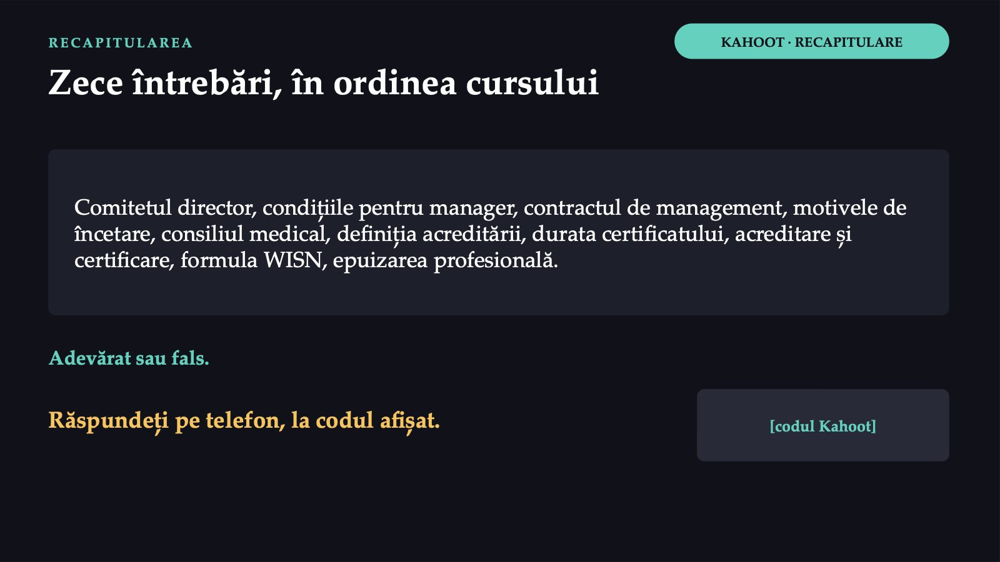
51 / 55Răspunsurile jocului
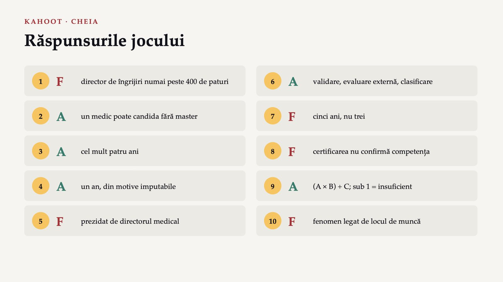
52 / 55După trei acte
![CE RĂMÂNE După trei acte 1 Spitalul public: manager cu contract de cel mult patru ani și comitet director; liniile administrativă și medicală se întâlnesc în comitet. 2 Acreditarea ANMCS: evaluare externă, certificat valabil cinci ani; fără ea, nu există contract cu casa de asigurări. 3 RENAR acreditează laboratoare și organisme de certificare; certificarea ISO confirmă un sistem de management. 4 Metoda WISN: necesarul din munca reală, (A × B) + C; raportul arată presiunea de muncă. Cele trei acte: cine răspunde, pe ce dovezi, în fața cui.](diapozitive/C09/053.jpg) 53 / 55
53 / 55Ce faceți diferit, ca rezident
![LUNI DIMINEAȚĂ Ce faceți diferit, ca rezident 1 Când începeți rezidențiatul, căutați organigrama: aflați cine este șeful secției, cine este directorul medical și cine răspunde de calitate. 2 Când vi se cere „încă o gardă”, amintiți-vă că epuizarea este o problemă a locului de muncă, nu o slăbiciune personală; spuneți-o celor care organizează programul. 3 Când un evaluator vă întreabă cum lucrați, spuneți cum lucrați de fapt. La Spitalul Județean A, evaluatorii vor vorbi cu medici, asistente și pacienți.](diapozitive/C09/054.jpg) 54 / 55
54 / 55Înainte să plecați
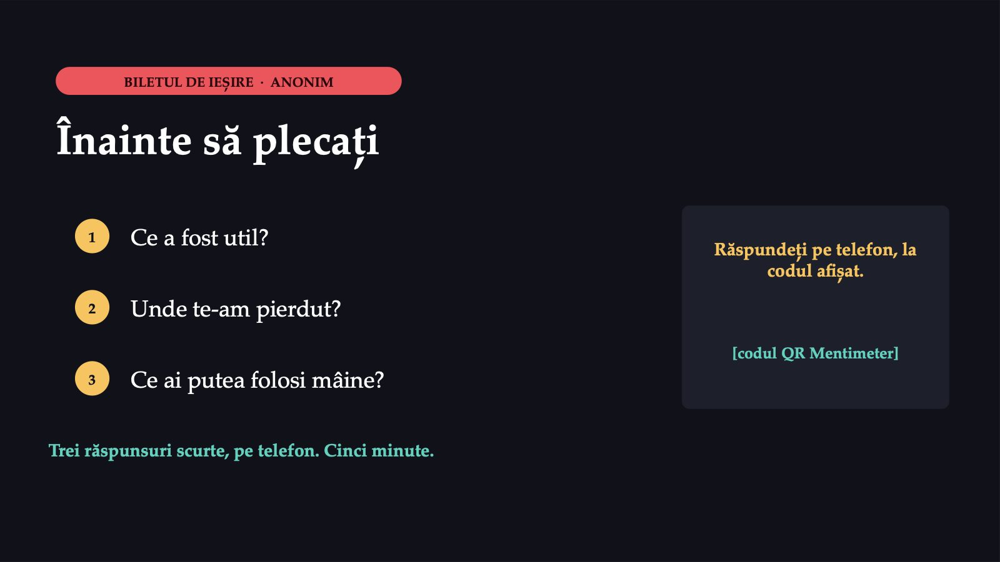
55 / 55Săgeți sau spațiu: navigare · O: vedere de ansamblu · N: notele prezentatorului · F: ecran complet · Esc: închidere